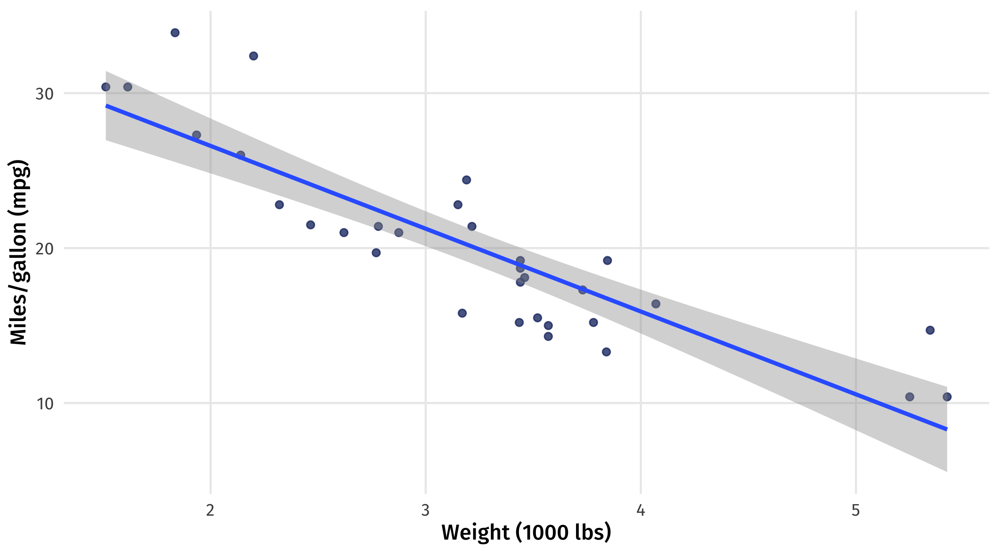
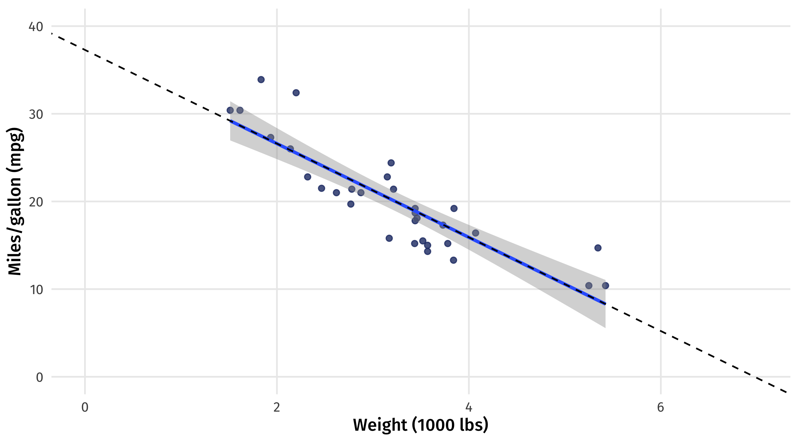
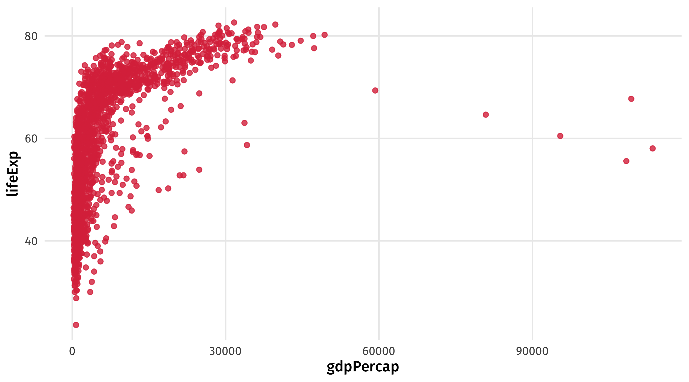
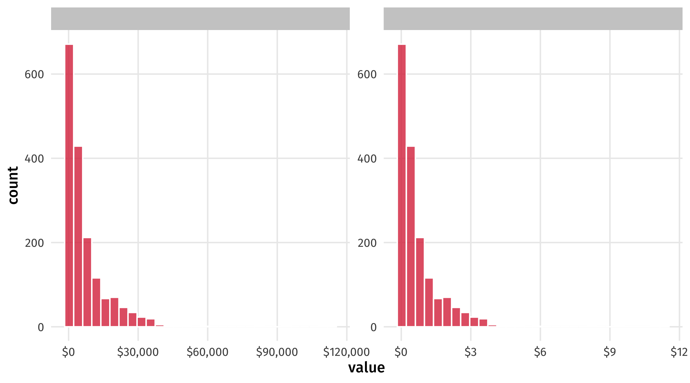
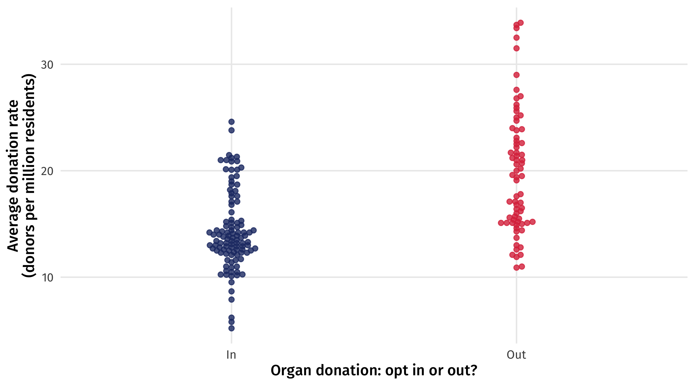
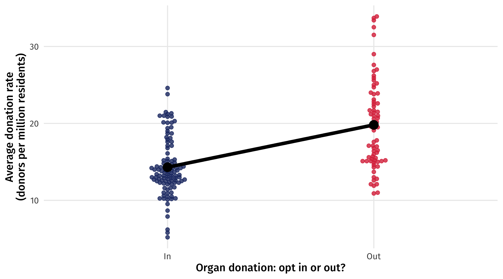
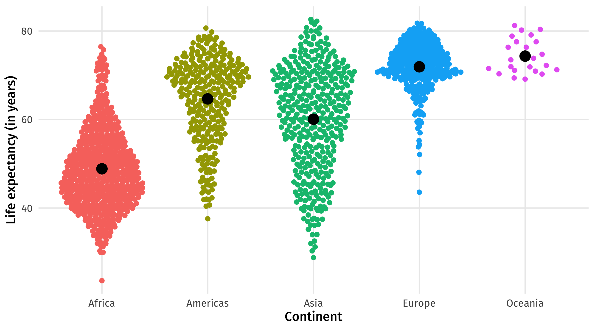

Modeling II
POL51
Haley Daarstad
University of California, Davis
July 8, 2026
Plan for today
OLS in R
Modeling with continuous variables
Modeling with categorical variables
Uses of models
What we want out of our model:
Does TV news make people more energized to vote? Or does it turn them off from politics?
How much does an additional hour of TV increase (or decrease) the likelihood that someone votes?
What level of Y (voter turnout) should we expect for a given level of X (exposure to the news)?
OLS in R
How does car weight impact fuel efficiency?
| mpg | cyl | disp | hp | drat | wt | qsec | vs | am | gear | carb | |
|---|---|---|---|---|---|---|---|---|---|---|---|
| Valiant | 18.1 | 6 | 225.0 | 105 | 2.8 | 3.5 | 20.2 | 1 | 0 | 3 | 1 |
| Hornet 4 Drive | 21.4 | 6 | 258.0 | 110 | 3.1 | 3.2 | 19.4 | 1 | 0 | 3 | 1 |
| Datsun 710 | 22.8 | 4 | 108.0 | 93 | 3.9 | 2.3 | 18.6 | 1 | 1 | 4 | 1 |
| Duster 360 | 14.3 | 8 | 360.0 | 245 | 3.2 | 3.6 | 15.8 | 0 | 0 | 3 | 4 |
| Mazda RX4 | 21.0 | 6 | 160.0 | 110 | 3.9 | 2.6 | 16.5 | 0 | 1 | 4 | 4 |
| Merc 240D | 24.4 | 4 | 146.7 | 62 | 3.7 | 3.2 | 20.0 | 1 | 0 | 4 | 2 |
| Hornet Sportabout | 18.7 | 8 | 360.0 | 175 | 3.1 | 3.4 | 17.0 | 0 | 0 | 3 | 2 |
How does car weight impact fuel efficiency?
Remember, we want to estimate \(\beta_0\) (intercept) and \(\beta_1\) (slope)
\(mpg = \beta_0 + \beta1 \times weight\)

Fit the model
We can use lm() to fit models in R using this general formula:
lm(Outcome ~ X1 + X2 + …, data = DATA)
Notice that I saved as an object, and the placement of the variables
The outcome always goes on the left hand side
Extract the model
We can extract our estimates of \(\beta_0\) and \(\beta_1\) with tidy(), from the broom package
Making sense of the table
\(mpg = \beta_0 + \beta_1 \times weight\)
# A tibble: 2 × 5
term estimate std.error statistic p.value
<chr> <dbl> <dbl> <dbl> <dbl>
1 (Intercept) 37.3 1.88 19.9 8.24e-19
2 wt -5.34 0.559 -9.56 1.29e-10The estimate column gives us \(\beta_0\) (intercept) and \(\beta_1\) (slope for weight)
Note! We only care about the first two columns of tidy() so far
Extract the model
\(mpg = \beta_0 + \beta_1 \times weight\)
| term | estimate | std.error | statistic | p.value |
|---|---|---|---|---|
| (Intercept) | 37.29 | 1.88 | 19.86 | 0 |
| wt | -5.34 | 0.56 | -9.56 | 0 |
The intercept ( \(\beta_0\) ) = 37.29
The slope ( \(\beta_1\) ) = -5.3
The model: \(mpg = 37.29 + -5.3 \times weight\)
Modeling with continuous variables
Back to the cars
The model: \(mpg = 37.29 + -5.3 \times weight\)
How do we interpret the slope on weight?

Interpretation: continuous variables
As you turn the dimmer (treatment variable) the light (outcome variable) changes
Turn the dimmer up, the light increases by SLOPE amount
Turn the dimmer down, the light decreases by SLOPE amount
The change is gradual
Interpretation: the slope
\(mpg = 37.2 + \color{red}{-5.3} \times weight\)
| term | estimate | std.error | statistic | p.value |
|---|---|---|---|---|
| (Intercept) | 37.29 | 1.88 | 19.86 | 0 |
| wt | -5.34 | 0.56 | -9.56 | 0 |
General: for every unit increase in X, Y changes by \(\color{red}{5.3}\) units
Specific: for every ton of weight you add to a car, you lose \(\color{red}{5.3}\) miles per gallon of fuel efficiency
Interpretation: the intercept
\(mpg = 37.2 + -5.3 \times weight\)
Remember that the Y-intercept is the value of Y when X = 0
\[ \begin{aligned} Y = 6 + 2x \\ X = 0 \\ Y = 6 + 2 \times 0 \\ Y = 6 \end{aligned} \]
Interpretation: the intercept
Take the formula: \(mpg = 37.2 + -5.3 \times weight\)
Set X (weight) equal to 0 \(\rightarrow\) \(\color{red}{37.2} + (-5.3 \times 0) = \color{red}{37.2}\)
General: The estimated value of Y, when X equals zero, is \(\color{red}{37.2}\) units
Specific: The estimated fuel efficiency for a car that weighs 0 tons is \(\color{red}{37.2}\) miles per gallon
Spot the intercept
\(mpg = 37.29 + -5.3 \times weight\)

We can confirm we’re not crazy if we zoom out; the line crosses y-axis at 37.2
Nonsense intercepts
\(mpg = 37.2 + -5.3 \times weight\)
Interpretation of the intercept:
The average fuel efficiency for a car that weighs nothing is 37.2 miles per gallon
This is nonsense: a car cannot weigh zero tons
You will run into this often: don’t let it confuse you!
the intercept will rarely be useful on its own; But we need it to make predictions
Another example: gapminder
What’s the relationship between GDP per capita and life expectancy?

Another example: gapminder
What’s the relationship between GDP per capita and life expectancy?
| country | continent | year | lifeExp | pop | gdpPercap |
|---|---|---|---|---|---|
| Rwanda | Africa | 1957 | 42 | 2822082 | 540 |
| Chile | Americas | 1962 | 58 | 7961258 | 4519 |
| Comoros | Africa | 1997 | 61 | 527982 | 1174 |
| Italy | Europe | 1957 | 68 | 49182000 | 6249 |
| Senegal | Africa | 1992 | 58 | 8307920 | 1368 |
Notice the units: life expectancy in years, GDP in dollars per capita
The model
We fit the model using lm()
Interpreting the estimates
\(LifeExp = \beta_0 + \beta_1 \times gdpPercap\)
# A tibble: 2 × 5
term estimate std.error statistic p.value
<chr> <dbl> <dbl> <dbl> <dbl>
1 (Intercept) 54.0 0.315 171. 0
2 gdpPercap 0.000765 0.0000258 29.7 3.57e-156\(\beta_1\), the slope = for every additional dollar of GDP, a country’s life expectancy rises by .0007 years
\(\beta_0\), the intercept = the average life expectancy for a country with no economic activity (GDP = 0) is 54 years
The scale of the coefficients
\(LifeExp = 54 + .0007 \times gdpPercap\)
Slope: for every dollar increase in GDP, life expectancy increases by 0.0007 years
Tiny! Does this mean a country’s wealth has little to do with their health?
No! It is a problem with the scale that GDP is in
one dollar differences in GDP are tiny, meaningless
GDP changes by much more from year to year
Variable scales
We can rescale GDP so that it’s in 10s of thousands of dollars:
# A tibble: 1,704 × 7
country continent year lifeExp pop gdpPercap gdp_10k
<fct> <fct> <int> <dbl> <int> <dbl> <dbl>
1 Afghanistan Asia 1952 28.8 8425333 779. 0.0779
2 Afghanistan Asia 1957 30.3 9240934 821. 0.0821
3 Afghanistan Asia 1962 32.0 10267083 853. 0.0853
4 Afghanistan Asia 1967 34.0 11537966 836. 0.0836
5 Afghanistan Asia 1972 36.1 13079460 740. 0.0740
6 Afghanistan Asia 1977 38.4 14880372 786. 0.0786
7 Afghanistan Asia 1982 39.9 12881816 978. 0.0978
8 Afghanistan Asia 1987 40.8 13867957 852. 0.0852
9 Afghanistan Asia 1992 41.7 16317921 649. 0.0649
10 Afghanistan Asia 1997 41.8 22227415 635. 0.0635
# ℹ 1,694 more rowsVariable scales
Note the variable is the same; only thing that has changed is the scale!

Re-fit the model
# A tibble: 2 × 5
term estimate std.error statistic p.value
<chr> <dbl> <dbl> <dbl> <dbl>
1 (Intercept) 54.0 0.315 171. 0
2 gdp_10k 7.65 0.258 29.7 3.57e-156Slope (\(\beta_1\)): for every additional $10,000 of GDP, a country gains about 7.65 years
Mind your scales: if a coefficient is tiny, ask yourself if the scale makes sense
🚨 🚢 Who trades? 🚢 🚨
Fit a model that estimates how much a country exports, using a treatment variable of your choosing. Interpret the model output.
Note
- Use the dataset
tradein the packagejuanr - Identify your y (outcome) and x (explanatory) variables
- Use the
lm()function to fit a model - Use
tidy()to show the outcomes of the model
🚨 🚢 Who trades? 🚢 🚨
Regression with categorical variables
Categorical variables
We can also use categorical variables in our models
The simplest categorical variable is a binary variable: Men vs. women, young vs. old, has a policy in place (vs. not), TRUE/FALSE
Let’s look at data on the relationship between organ donation laws and how frequently people donate their organs
organ donation laws in this data are binary: in some countries, people have to opt out of donating their organs
In other countries, people have to opt in (like in the US)
Organ donation
| country | year | donors | opt |
|---|---|---|---|
| Sweden | 2002-01-01 | 11.0 | Out |
| Italy | 1993-01-01 | 6.2 | In |
| Germany | 1997-01-01 | 13.2 | In |
| Italy | 2000-01-01 | 14.2 | In |
| Canada | 2002-01-01 | 13.0 | In |
Binary variables in models
I can include the binary variable in a regression model:
And look at the output:
# A tibble: 2 × 5
term estimate std.error statistic p.value
<chr> <dbl> <dbl> <dbl> <dbl>
1 (Intercept) 14.3 0.446 32.1 7.10e-76
2 optOut 5.50 0.705 7.80 5.00e-13But how do we interpret the “slope” of a binary variable?
Binary variables
Remember, with categorical variables we are comparing groups

Binary variables: fitting the model
We can think about a line running “across” the groups, with each endpoint being optimally located to minimize the squared distances within each group

Binary variables: the slope
The height of one endpoint relative to the other, or the slope of the line, tells us how much higher or lower one group is, on average, than the other

In this case it is 5.5 \(\rightarrow\) how many more organ donors countries with an “opt out” policy have, on average, than countries with an “opt in” policy
Back to the regression output
Note that this is exactly what the model output is giving us:
# A tibble: 2 × 5
term estimate std.error statistic p.value
<chr> <dbl> <dbl> <dbl> <dbl>
1 (Intercept) 14.3 0.446 32.1 7.10e-76
2 optOut 5.50 0.705 7.80 5.00e-13The model is picking one of the categories (“Opt in”) and treating it as a baseline category
It tells us how much higher/lower on average, the other category is (“Opt out”)
How to interpret categorical variables?
Turn the light on (
optgoes from “In” to “Out”), the light increases by SLOPETurn the light off (
optgoes from “Out” to “In”), the light decreases by SLOPEThe change is instant
Interpreting categories
\(\operatorname{\widehat{donors}} = \color{red}{14.31} + \color{blue}{5.5}(\operatorname{opt}_{\operatorname{Out}})\)
# A tibble: 2 × 5
term estimate std.error statistic p.value
<chr> <dbl> <dbl> <dbl> <dbl>
1 (Intercept) 14.3 0.446 32.1 7.10e-76
2 optOut 5.50 0.705 7.80 5.00e-13Slope: Country-years where people have to OPT OUT of donating their organs have, on average, 5.5 more donations per million residents than country-years where people have to OPT IN
Intercept (set optOut = 0 or “off”, i.e., countries where opt == "in"):
Country-years where people have to OPT IN to organ donation have, on average, 14.31 donations per million residents
More complicated categorical variables
Most of the variables we care about are not just binary
They take on many values
E.g., education levels, sex, race, religion, etc.
What happens when we include one of these in a model?
Say we wanted to look at how being in a particular continent shapes a country’s life expectancy
The model
We can estimate the model, same as before:
# A tibble: 5 × 5
term estimate std.error statistic p.value
<chr> <dbl> <dbl> <dbl> <dbl>
1 (Intercept) 48.9 0.370 132. 0
2 continentAmericas 15.8 0.649 24.3 1.38e-112
3 continentAsia 11.2 0.593 18.9 2.44e- 72
4 continentEurope 23.0 0.611 37.7 1.38e-226
5 continentOceania 25.5 1.92 13.3 2.99e- 38Now we get more coefficients! What do they mean?
Look at the data
With complex categorical variables, we are also comparing across groups

We can also identify the value within each group that minimizes \((Y_i - \hat{Y_i})^2\)
But how to draw a “line” across all these groups?
Multiple categories
Just like before, R will pick one of the groups to treat as the “baseline”
It will then tell us how much higher/lower the other categories are, on average, relative to that baseline category
# A tibble: 5 × 5
term estimate std.error statistic p.value
<chr> <dbl> <dbl> <dbl> <dbl>
1 (Intercept) 48.9 0.370 132. 0
2 continentAmericas 15.8 0.649 24.3 1.38e-112
3 continentAsia 11.2 0.593 18.9 2.44e- 72
4 continentEurope 23.0 0.611 37.7 1.38e-226
5 continentOceania 25.5 1.92 13.3 2.99e- 38What group is the baseline here?
Interpretation
# A tibble: 5 × 5
term estimate std.error statistic p.value
<chr> <dbl> <dbl> <dbl> <dbl>
1 (Intercept) 48.9 0.370 132. 0
2 continentAmericas 15.8 0.649 24.3 1.38e-112
3 continentAsia 11.2 0.593 18.9 2.44e- 72
4 continentEurope 23.0 0.611 37.7 1.38e-226
5 continentOceania 25.5 1.92 13.3 2.99e- 38continentAmericas= countries in the Americas have, on average, 15.8 years more life expectancy than countries in Africa (the baseline)continentAsia= countries in Asia have, on average, 11.2 years more life expectancy than countries in AfricaIntercept= (set Americas = 0, Asia = 0, Europe = 0, Oceania = 0) \(\rightarrow\) the average life expectancy in Africa is 48.9 years
Interpretation formula
| Type | Approach | Intercept |
|---|---|---|
| Continuous | A one unit increase in X, SLOPE unit change in Y | Average value of Y when X = 0 |
| Category | The category is SLOPE units higher/lower than the intercept | Average value of Y for baseline (missing) category |
Interpreting coefficients is pretty confusing; it just requires practice
We’re on our way
We now know (sort of) how to interpret the coefficients on those big tables:

🚨 Your turn: 👨👧👦 Kids 👨👧👦 🚨
Using the gss_sm dataset:
Do happier people tend to have more or fewer kids than less happy people? Regress
childs(outcome) againsthappy(treatment). Interpret the output.How does religion affect family size? Regress the number of siblings
sibs(outcome) against respondent religionrelig. Based on the output: which religion has the largest families, on average?
Note
- The dataset
gss_smis found in the packagesocviz summary()ortidy()for table
Remember: to rearrange a table or outcome, you can use the data |> arrange(desc(variable_name)) to show the highest to lowest.
🚨 👨👧👦 Kids Q1 👨👧👦 🚨
# A tibble: 4 × 1
happy
<fct>
1 Pretty Happy
2 Very Happy
3 <NA>
4 Not Too Happy# A tibble: 3 × 5
term estimate std.error statistic p.value
<chr> <dbl> <dbl> <dbl> <dbl>
1 (Intercept) 1.91 0.0586 32.6 1.13e-198
2 happyPretty Happy -0.145 0.0719 -2.02 4.32e- 2
3 happyNot Too Happy 0.105 0.0980 1.07 2.86e- 1🚨 👨👧👦 Kids Q2 👨👧👦 🚨
# A tibble: 13 × 5
term estimate std.error statistic p.value
<chr> <dbl> <dbl> <dbl> <dbl>
1 (Intercept) 3.77 0.0861 43.8 8.48e-321
2 religMoslem/Islam 1.86 0.736 2.53 1.15e- 2
3 religNative American 0.478 1.59 0.300 7.64e- 1
4 religCatholic 0.452 0.152 2.97 2.96e- 3
5 religOther 0.000631 0.488 0.00129 9.99e- 1
6 religOther Eastern -0.0221 1.59 -0.0139 9.89e- 1
7 religChristian -0.347 0.511 -0.680 4.97e- 1
8 religNone -0.484 0.154 -3.14 1.72e- 3
9 religOrthodox-Christian -0.486 1.21 -0.403 6.87e- 1
10 religInter-Nondenominational -0.915 1.21 -0.758 4.48e- 1
11 religBuddhism -0.963 0.700 -1.37 1.69e- 1
12 religJewish -1.93 0.454 -4.25 2.23e- 5
13 religHinduism -2.00 0.887 -2.26 2.41e- 2